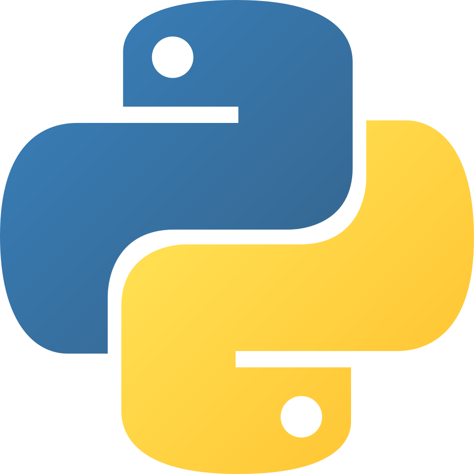

Compétences techniques

Python
Mon expérience avec le Python remonte jusqu'au lycée, où j'ai commencé à apprendre les bases du langage. Il a été ma porte d'entrée dans le monde de la programmation informatique, et sa simplicité m'a permis de donner vie des projets personnels très tôt.
Aujourd'hui, il reste un langage de prédilection, que ce soit pour des algorithmes simples ou des projets plus complexes, comme le développement de jeux vidéo, ou d'applications IHM.
C & C++
Le langage C a servi d'introduction à mon parcours d'études en informatique. C'est là que j'ai appris qu'il fallait aller plus loin que de simples programmes, et qu'il fallait prendre en compte de nombreux éléments pour assurer le bon fonctionnelent de mes projets. J'ai appris à gérer la mémoire, à optimiser les performances et à structurer mon code de manière efficace.
Le langage C++ fait également partie de mes compétences, me plongeant plus loin dans la complexité, et surtout la diversité des paradigmes de programmation. J'ai exploré la programmation orientée objet, la gestion de la mémoire avancée et les bibliothèques graphiques, ce qui m'a permis de travailler sur des projets plus ambitieux.
Java
Si je devais choisir un langage de programmation favori, ce serait sans doute Java. Découvert lors de mes études, j'ai très vite développé une familiarité et une aisance pour celui-ci. Je l'ai utilisé pour travailler sur mes premiers projets personnels de plus grande ampleur, avec des interfaces graphiques, des fonctionnalités plus complexes, et même des jeux vidéo.

HTML/CSS
Au cours de mes études et de mes projets personnels, j'ai pu développer de nombreux sites web. Qu'ils soient de simples sites statiques visant à documenter les voyages d'un client, ou des outils web dynamiques servant à manager une équipe en interne.
Le CSS va de pair avec le HTML, et je le maîtrise autant avec l'aide d'un framework comme Bootstrap, que de manière plus traditionnelle, pour rendre mes sites modernes, attrayants, et responsive.
PHP
Avant de découvrir le PHP, j'étais pourtant à l'aise avec le simple HTML/CSS, et j'avais déjà développé quelques sites web. Mais ce langage m'a révélé la réelle diversité du développement web, en me permettant de créer des sites dynamiques, avec des fonctionnalités plus avancées, et surtout une interaction avec les utilisateurs et les bases de données.
PostgreSQL
Ma maitrise de PostgreSQL, et du SQL en général, s'est développée au fil de mes études et de mon premier projet professionnel. Je sais concevoir des bases de données relationnelles, écrire des requêtes complexes pour extraire et manipuler les données, et optimiser les performances de mes bases de données pour garantir une expérience utilisateur fluide.
Je sais également prévoir mes projets de bases de données, avec des MCD et MLD, pour assurer une bonne organisation et une évolutivité de mes projets.

Godot Engine
J'ai d'abord utilisé Godot pour créer un jeu d'attaque/défense dans le cadre de mes études, puis dans le cadre de projets personnels. C'est le premier moteur de jeu que j'ai utilisé, qui m'a permis d'aller plus loin que la simple programmation que je faisais jusqu'alors. Son utilisation en nodes et en langage Python l'ont rendu facile à prendre en main rapidement.
Unreal Engine
Utilisé pour créer un jeu VR, Unreal Engine m'a permis d'utiliser mon esprit logique non pas avec du code, mais avec des Blueprints. Ce fut une expérience de réflexion très différente de mes habitudes, mais très enrichissante.